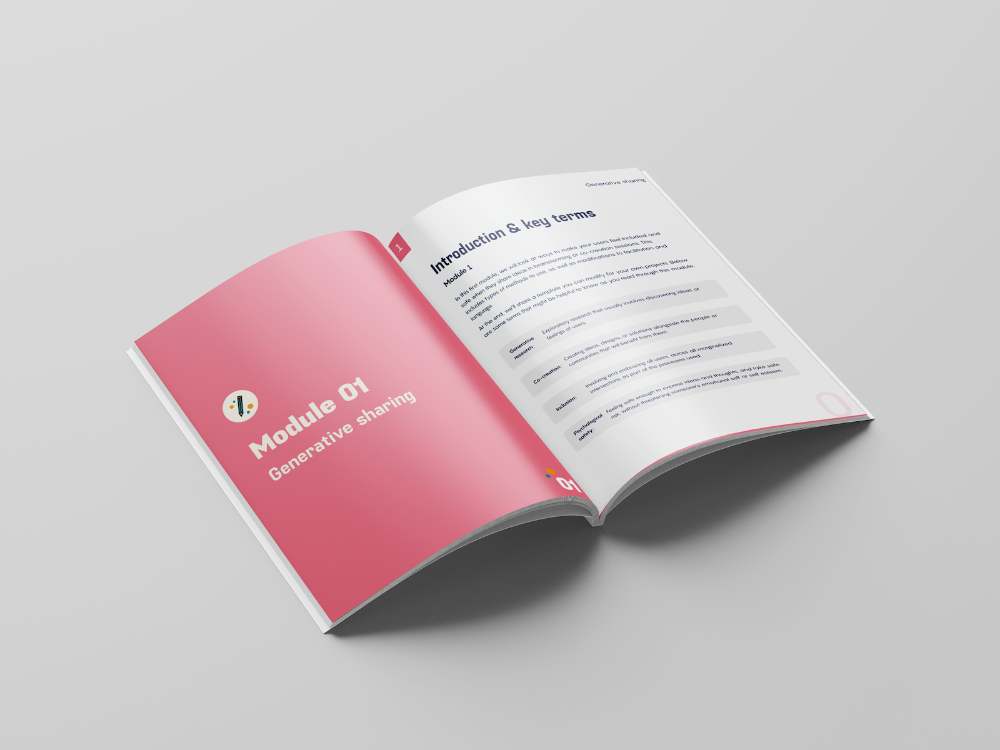
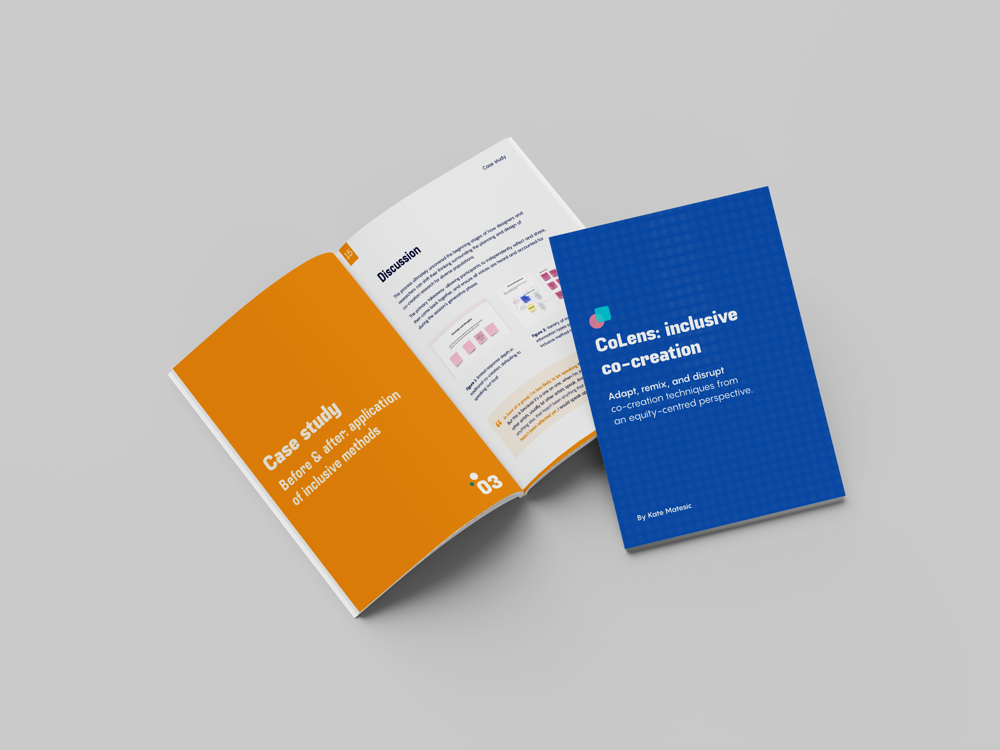

Shifting the co-design narrative
Enabling all participants to be heard in design research
This toolkit will help you implement equity-centred co-creation methods into your workshops, prototyping sessions, and user research.

Enabling all participants to be heard in design research
This toolkit will help you implement equity-centred co-creation methods into your workshops, prototyping sessions, and user research.


Framework building
Learn how to adapt these methods to your own work.


Research-backed case studies
See these methods in action with case studies with different user groups.
Framework building
Learn how to adapt these methods to your own work.
Research-backed case studies
See these methods in action with case studies with different user groups.
Download the toolkit
Free forever.